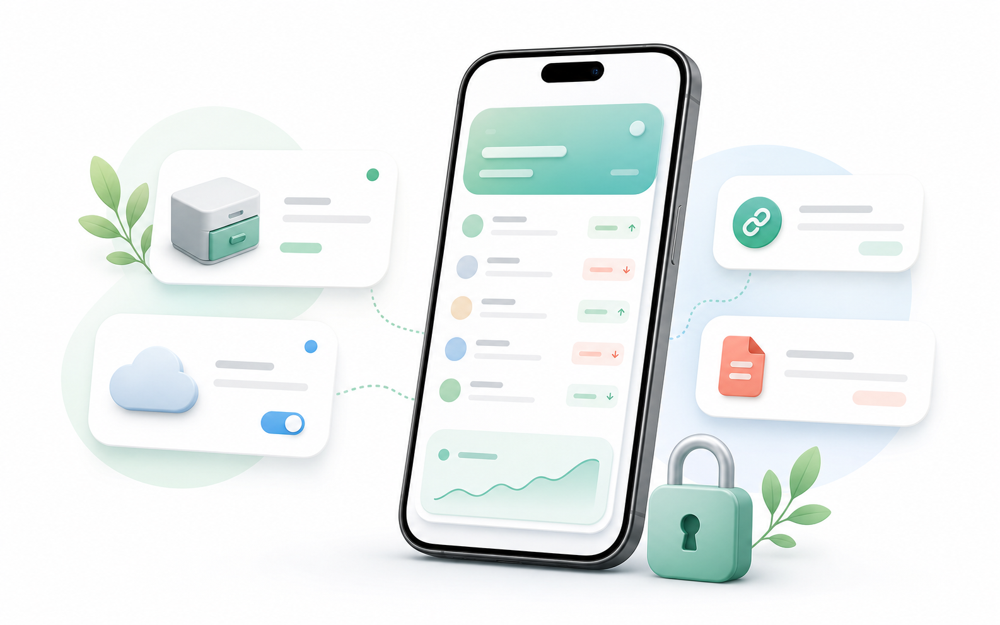

Privacy & data clarity
Privacy and Data in You Owe Me
A plain-English guide to what stays in the app, what can sync, what happens when you share a link, and how optional AI features work.
Money records are sensitive. You Owe Me is designed to help you keep a clear record of balances, repayments, shared expenses, reminders, notes, statements, and money conversations between real people. The core tracking experience can work without a mandatory You Owe Me account, and your working ledger is stored in the app's local database. Some features, such as iCloud sync, Cloud Accounts, Balance Sync, Live Links, temporary statement links, AI drafting, support, diagnostics, and exchange-rate lookup, use network services when you choose or enable them.
Free download. Core tracking works without a mandatory You Owe Me account.

Plain-English overview
The short version
You Owe Me helps you keep records of money between people. The app is not a bank or payment processor. It does not move money, issue loans, collect debts, or report credit. It keeps a record of what happened, what was repaid, what is still open, and what you may want to say next.
You can start without a cloud account
The core tracking experience does not require a You Owe Me cloud account. Some features, such as Cloud Accounts and Live Link management, use Sign in with Apple.
Your ledger starts in the app
Your working ledger is stored in the app's local database and can support offline use for core tracking. Depending on your Apple account and device settings, it may also sync through iCloud.
Sharing is a choice
PDFs, CSVs, text summaries, statement links, Live Links, and private two-person Balance Sync connections are created only when you choose to share or connect.
AI drafts, you decide
AI-assisted features can help parse entries or draft messages, but the app shows results to you first. Messages are not sent automatically.
Records
What the app helps you record
You Owe Me records the practical details needed to understand money between people later.
People and balances
Names or labels, currencies, current balances, and the history connected to each person, client, family member, roommate, partner, or group situation.
Entries and repayments
Amounts, dates, directions, reasons or notes, repayments, partial repayments, corrections, and recurring entries.
Shared costs and Group Paybacks
Shared expenses, participants, split shares, who paid first, who paid back, who partly paid, and who still owes.
Reminders and check-ins
Due dates, reminder purpose, reminder timing, and whether a reminder was completed.
Statements and exports
PDF statements, CSV exports, text summaries, receipt-style confirmations, and sharing history when you create them.
Optional AI/message context
When you use AI-assisted features, the app may use the text and balance context needed to parse an entry or draft a message.
Storage and services
Where your records can be stored
The exact places involved depend on which features you use, which Apple account and device settings are active, and whether you enable cloud or sharing features.
| Place | Used for | What to know |
|---|---|---|
| On your device | Core working ledger and app settings | Core tracking works around the app's local database and can be used without a mandatory You Owe Me cloud account. |
| iCloud / CloudKit | Apple-account/device-based sync | Your local app data may sync through Apple iCloud/CloudKit depending on your Apple account and device settings. |
| Cloud Accounts / Firebase | Optional cloud profiles and related cloud features | If you use Cloud Accounts, selected account/profile and ledger data needed for that feature may be stored in Firebase services. |
| Balance Sync / Firebase | A private canonical ledger for two authenticated participants | Cloud Firestore and Cloud Functions process and store canonical copies of supported shared entries so changes can be projected into both participants' app records. |
| Public web links | Temporary statement links and Live Links | These are public link-based pages. Anyone with the link can view the shared statement while it is active. |
| AI backend | Voice-to-entry parsing and message drafting | When you use AI features, relevant text and context may be sent to You Owe Me's AI backend, which uses OpenAI. |
| Support and diagnostics | Support requests and reliability | Crash reporting and support messages help diagnose problems. The full Privacy Policy explains the current analytics configuration. |
For the legal version, data-retention details, provider list, and privacy request options, read the full Privacy Policy.
Setup
No mandatory You Owe Me account for core tracking
You can use the core tracking experience without creating a You Owe Me cloud account. That keeps setup simple: choose the person, add what happened, and let the app keep the balance and history clear.
Some features need account or cloud support. For example, Cloud Accounts and Live Link management may require Sign in with Apple. Balance Sync requires both participants to use full Apple-linked Firebase accounts so the app can authorize the private connection.
Sharing
What happens when you share a record
Sharing is always something you choose. The app can help you share different levels of detail depending on what the other person needs.
| Share option | Best when | Privacy note |
|---|---|---|
| Text summary | You only need a simple balance update. | You choose where to paste or send it. |
| CSV export | You want a spreadsheet-style copy. | The file is created for export and then controlled by where you save or send it. |
| PDF statement | The record needs to look clearer than a chat message. | You choose when to generate and share it. |
| Temporary statement link | You want a short-term browser view. | Public to anyone with the link and intended to expire after 3 days. |
| Live Link | The balance may change and the other person needs the latest view. | Public to anyone with the link while active. It may update when related entries change. |
| Balance Sync | Both people use the app and want one supported balance to update in both records. | Private to two authenticated participants after acceptance. Before acceptance, anyone with the complete invitation link may be able to claim it. |
Live Links are convenient, but they are still links.
When you create a Live Link, You Owe Me publishes a read-only web statement at an unlisted link. The other person does not need to install the app or create an account, but anyone with the link can view the active statement. Only share it with people who should see that balance history.
If your main question is whether the other person needs the app, read how one person can keep the record and still share the balance clearly.
- A Live Link can show selected balance history, totals, dates, amounts, currencies, notes/reasons, and interest details where relevant.
- A Live Link may update as you add, edit, or delete related entries.
- You can stop sharing, which removes transaction rows from the public page, or delete the Live Link record.
- They are link-based statements, not signed-in account pages.
Balance Sync is private, two-way sharing for two people.
Balance Sync is optional. When two authenticated participants connect one balance, Firebase Cloud Firestore and Cloud Functions process and store a private canonical copy of supported shared entries. Shared fields can include amounts, currencies, dates, reasons or notes, interest settings, archive state, and supported loan relationships.
- Both participants can create, edit, archive, or delete connected entries. Those changes are projected into each person's local app record when the app synchronizes.
- Keep the invitation private: anyone with the complete link may be able to claim it before it expires after seven days, is replaced, or is cancelled. The website does not display the inviter, amounts, notes, or other entry details.
- The recipient accepts the balance into a new, separate person record. Balance Sync does not merge into an existing record.
- Amount, debt direction, currency, date, note or reason, entry icon, archived state, and supported interest or linked balance-record information can synchronize.
- Local person names, profile images, entry images and attachments, reminders, recurrence rules, and other local-only settings are not transferred.
- The initial connection shares the history needed to reproduce the current balance, normally beginning after the latest even point. Older settled history normally stays local, and setup fails safely if the balance cannot be reproduced exactly.
- If both people edit the same entry, that entry pauses until a user chooses one complete version. Other connected activity can continue, and changes are not silently overwritten.
- Group Payback activity does not synchronize. Live Link and Balance Sync also cannot be active at the same time for the same connected person.
- The connected balance’s base currency stays fixed until disconnection.
- Disconnecting stops future sync. Both people keep their local borrower and entries, while the disconnected canonical ledger becomes inaccessible and is scheduled for deletion after a 30-day safety window.
- Deleting an account closes its Balance Sync connections and schedules controlled canonical data for deletion. It cannot remotely erase a copy that the other participant already downloaded into their own local app storage.
- To keep a deleted account or Cloud Account scope closed to stale devices, Firebase may retain an opaque deletion fence. It contains no ledger entries, amounts, notes, invitation tokens, raw user ID, or raw profile ID.
Balance Sync uses encrypted transport and Firebase platform storage protections. It is not end-to-end encrypted.
For the product overview, participation choices, and feature limitations, see Balance Sync on the Features page.
Ready to keep a clearer record?
Start in the app, then share summaries, PDFs, statement links, Live Links, or a private Balance Sync connection only when they help.
AI-assisted tools
AI features draft and parse, they do not send messages for you
You Owe Me includes optional AI-assisted tools such as Voice to Entry, follow-up message generation, repayment update generation, and ask-for-loan message generation. These features are meant to reduce friction when the record is clear but the wording or entry capture is hard.
When you use these features, the app may send the text and relevant balance context needed for that feature to You Owe Me's AI backend, which uses OpenAI. That context may include names or labels, amounts, currencies, dates, notes/reasons, balance state, relationship context, and previous generated text when needed for regeneration.
The result is shown to you first. You choose whether to save an entry, copy a message, share a draft, or do nothing. AI money messages are not automatically sent to the other person.
Reminders and AI messages are different
Payment reminders notify you so you do not forget a due date, bill, repayment, or follow-up task. AI money messages generate draft text you can edit, copy, or share. A reminder does not automatically send a message to the other person.
For the broader product view, see the Features page. If the specific issue is repayment timing, read the repayment update guide.
Notifications
Reminders notify you, not the other person
Payment reminders are for the app user. They can help you remember a payback date, bill, repayment, person-balance check-in, or follow-up task. A reminder may include useful details such as a name, amount, due timing, or reminder purpose.
You Owe Me does not automatically send reminder messages to the other person. If you decide to follow up, you stay in control of whether to write, edit, copy, or share a message.
Due date reminder
Helps you remember a date or amount, not sent automatically.
Person balance check-in
Helps you review an open balance, not sent automatically.
Follow-up task
Helps you return to a conversation, not sent automatically.
Device protection
App Lock helps protect records on your phone
You can turn on App Lock to require Face ID, Touch ID, or your device passcode before opening the app. This is useful when your phone contains personal, family, client, or repayment records you do not want visible to someone who picks up your device.
App Lock
Face ID / Touch ID / passcode
Extra privacy for everyday money recordsPermissions
Permissions are tied to optional features
Contacts
Used when you choose to add people from Contacts.
Camera / Photos
Used when you choose images for profiles, entries, or related records.
Microphone / Speech Recognition
Used for Voice to Entry.
Notifications
Used for reminders and app notifications.
Face ID / device authentication
Used for App Lock.
iCloud / Sign in with Apple
Used for Apple sync/account-related features.
You do not need every permission for every workflow. The app asks when a feature needs access.
Reliability
Reliability and support data
The app uses crash reporting and diagnostics to help investigate reliability issues. If you contact support, your message and any details you choose to include may be used to respond and diagnose the issue.
If you need help with a privacy question or account-related request, use the support form.
Current analytics wording
The app codebase includes Firebase Analytics, but the current Privacy Policy explains that Analytics collection is disabled in the bundled configuration for the app version that policy covers. Because this can depend on app version and configuration, the legal Privacy Policy is the source of truth for the current analytics status.
Boundaries
What You Owe Me does not do
You Owe Me is a record and communication app. It helps you understand and explain money between people. It does not enforce, process, or legally formalize the money.
a bank
a lender
a payment processor
debt collection
credit reporting
accounting or tax software
a legal contract system
an invoicing platform
For formal loans, taxes, accounting, contracts, collections, or regulated financial services, use the appropriate professional tool or advisor.
Examples
How this looks in real situations
Friend owes you after several small costs
You keep the running balance in the app. If you need to follow up, you can copy a calm message or share a summary. The other person does not need an account just to understand the current balance.
How to keep track of who owes you moneyFamily support or parent expenses
You can record what was paid, what was repaid, and what still remains open. If the situation continues, a clear record helps avoid relying on memory.
Client-style payment record
You can keep a lightweight payment history and create a PDF statement or summary when the client needs context. You Owe Me still does not replace accounting, invoicing, tax, or payment-processing software.
Simple client payment recordsLive balance without another app
When another person needs visibility but does not want to install anything, a Live Link can show the active statement in a browser. It is useful, but it is public to anyone with the link.
One-person shared-money tracking guideFAQ
Questions about privacy and data in You Owe Me
Do I need an account to use You Owe Me?
No. The core tracking experience does not require a You Owe Me cloud account. Some features, such as Cloud Accounts and Live Link management, may require Sign in with Apple.
Can I use You Owe Me offline?
Yes, the core tracking experience is designed around the app's local database and can support offline use. Features such as sync, Cloud Accounts, AI, statement links, Live Links, support, diagnostics, and exchange-rate lookup may use network services.
Can records ever use cloud or network services?
Yes. Your working ledger is stored in the app's local database, but records may also use iCloud or other network services depending on your Apple account, device settings, and optional features. Optional Cloud Accounts, AI-assisted features, sharing links, support, diagnostics, and other network-based features may process data through cloud services. The full Privacy Policy is the legal source of truth for the current details.
What happens when I create a Live Link?
A Live Link creates a read-only web statement at an unlisted link. The other person does not need the app, but anyone with the link can view the active statement. A Live Link may show selected balance history, totals, dates, amounts, currencies, notes/reasons, and interest details where relevant.
How does Balance Sync handle shared records?
Balance Sync is optional and private to two authenticated participants. Firebase Cloud Firestore and Cloud Functions process and store canonical copies of supported shared entry fields so both people can edit or delete them. Images and recurrence rules stay local. Disconnecting stops future sync and schedules canonical data for deletion, but it does not remotely erase records already downloaded to the other participant's device.
Are temporary statement links private?
They are public to anyone with the link while available. They are intended for short-term sharing and are set to expire after 3 days. Do not treat them like signed-in account pages.
Are AI features optional?
Yes. AI-assisted features are optional. When you use them, the app may send text and relevant balance context to You Owe Me's AI backend, which uses OpenAI, so it can parse an entry or draft a message.
Does AI automatically message people?
No. AI features create drafts or parsed results for you. You choose whether to save, copy, share, or ignore the result.
Do reminders message the other person?
No. Payment reminders notify you on your device. They do not automatically send a reminder to the other person.
Does You Owe Me move money?
No. You Owe Me tracks balances and helps you communicate clearly. It does not transfer money, process repayments, issue loans, collect debts, report credit, or provide legal/financial collection services.
What permissions does the app ask for?
Depending on the features you use, the app may ask for Contacts, Camera, Photos, Microphone, Speech Recognition, Notifications, Face ID/device authentication, iCloud, or Sign in with Apple. Permissions are tied to optional features.
Where can I read the full legal policy?
Read the full Privacy Policy.
Start clearly
Keep the record clear, then share only what you choose
You Owe Me gives you one place to record what happened, what changed, what remains open, and what you may want to say next. Start with your own record. Add iCloud sync, Balance Sync, sharing, statements, reminders, Live Links, or AI drafting only when they help your situation.
Free download. Core tracking works without a mandatory You Owe Me cloud account.
Updated July 24, 2026